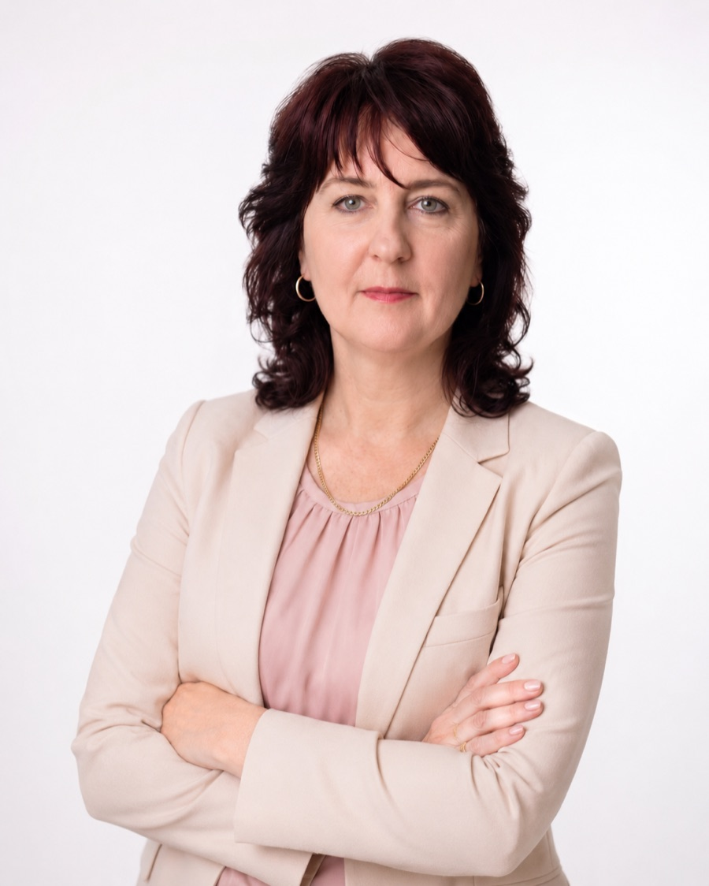

Консультація
Розбираємо вашу ситуацію, я одразу пояснюю реалістичні сценарії — без необґрунтованих обіцянок.
Я — адвокат Клименко Ірина Федорівна. Допомагаю у сімейних, спадкових, пенсійних, майнових і трудових спорах: від першої консультації до рішення суду. Особисто в Ладижині або онлайн по всій Україні.
Фокус — цивільні справи. Без розпорошення на «все підряд»: кожен напрям веду системно, з розумінням судової практики.
Розбираємо вашу ситуацію, я одразу пояснюю реалістичні сценарії — без необґрунтованих обіцянок.
Вивчаю документи та докази, визначаю правову позицію і те, чого бракує для сильної справи.
Готую позов, заяви, клопотання. Ви заздалегідь знаєте строки, витрати та наступні кроки.
Представляю ваші інтереси в суді та перед державними органами до фактичного результату.

Адвокатською діяльністю займаюсь з 2006 року. До адвокатури вісім років працювала консультантом у Пенсійному фонді України — тому пенсійні справи знаю зсередини, з боку самої системи.
«Зверталась у спадковій справі. Отримала спокійне пояснення по документах, строках і тому, з чого правильно почати.»
«У сімейному спорі одразу отримав чіткий план дій і розуміння ризиків. Комунікація по справі була по суті і без зайвих обіцянок.»
«Позов підготували швидко і зрозуміло пояснили, які докази справді мають значення. Це допомогло зібрати документи без хаосу.»
«Звертався щодо боргу. Порядок дій пояснили по кроках, підказали, які документи потрібні, і що варто зробити насамперед.»
Прийом у Ладижині: Пн–Пт з 10:00 до 17:00, в інший час — за домовленістю. Онлайн-консультації для клієнтів з усієї України.